library(sf)
library(terra)
library(spatstat)
library(tmap)
library(tidyverse)
library(knitr)
set.seed(1234)
tmap_mode("plot")Hands-on Exercise 2: Spatial Point Pattern Analysis
Overview
This page combines two Hands-on Exercise 2 topics:
- First-order Spatial Point Patterns Analysis Methods
- 2nd Order Spatial Point Patterns Analysis Methods
The two chapters use the same child care point data. Chapter 4 focuses on where the points are dense. Chapter 5 checks whether the points are spatially random or show interaction at different distances.
Note
The course examples use KML files. I use the downloaded GeoJSON files in this project. The important step is the same: both layers are transformed to EPSG:3414 before distance analysis.
Getting Started
Load Packages
tibble(
package = c("sf", "terra", "spatstat", "tmap", "tidyverse"),
version = c(
as.character(packageVersion("sf")),
as.character(packageVersion("terra")),
as.character(packageVersion("spatstat")),
as.character(packageVersion("tmap")),
as.character(packageVersion("tidyverse"))
)
) %>%
kable()| package | version |
|---|---|
| sf | 1.1.0 |
| terra | 1.8.93 |
| spatstat | 3.6.2 |
| tmap | 4.2 |
| tidyverse | 2.0.0 |
These packages cover the full workflow. sf handles vector data, spatstat handles point pattern analysis, and tmap is used for map output.
Data Used
data_used <- tibble(
data_type = c("Geospatial", "Geospatial"),
file = c(
"Master Plan 2019 Subzone Boundary (No Sea)",
"Child Care Services"
),
path = c(
"data/geospatial/master_plan_2019_subzone_no_sea.geojson",
"data/geospatial/childcare_services.geojson"
),
source = c("data.gov.sg", "data.gov.sg")
)
kable(data_used)| data_type | file | path | source |
|---|---|---|---|
| Geospatial | Master Plan 2019 Subzone Boundary (No Sea) | data/geospatial/master_plan_2019_subzone_no_sea.geojson | data.gov.sg |
| Geospatial | Child Care Services | data/geospatial/childcare_services.geojson | data.gov.sg |
The boundary layer gives the study area. The child care layer gives the point events for the analysis.
Part 1: First-order Spatial Point Patterns Analysis
First-order analysis is mainly about intensity. In simple terms, I am asking where child care services are more concentrated.
Import and Transform Geospatial Data
mpsz_sf <- st_read(
"data/geospatial/master_plan_2019_subzone_no_sea.geojson",
quiet = TRUE
) %>%
st_zm(drop = TRUE, what = "ZM") %>%
st_transform(crs = 3414)
childcare_sf <- st_read(
"data/geospatial/childcare_services.geojson",
quiet = TRUE
) %>%
st_zm(drop = TRUE, what = "ZM") %>%
st_transform(crs = 3414)layer_summary <- tibble(
layer = c("mpsz_sf", "childcare_sf"),
features = c(nrow(mpsz_sf), nrow(childcare_sf)),
geometry_type = c(
paste(unique(st_geometry_type(mpsz_sf)), collapse = ", "),
paste(unique(st_geometry_type(childcare_sf)), collapse = ", ")
),
epsg = c(st_crs(mpsz_sf)$epsg, st_crs(childcare_sf)$epsg)
)
kable(layer_summary)| layer | features | geometry_type | epsg |
|---|---|---|---|
| mpsz_sf | 332 | MULTIPOLYGON | 3414 |
| childcare_sf | 1925 | POINT | 3414 |
EPSG:3414 uses metres. This matters because nearest neighbour distance and KDE bandwidth both depend on distance units.
Map the Child Care Services
tm_shape(mpsz_sf) +
tm_borders(col = "grey70", lwd = 0.3) +
tm_shape(childcare_sf) +
tm_dots(size = 0.03, col = "#2b8cbe", alpha = 0.55) +
tm_title("Child Care Services in Singapore")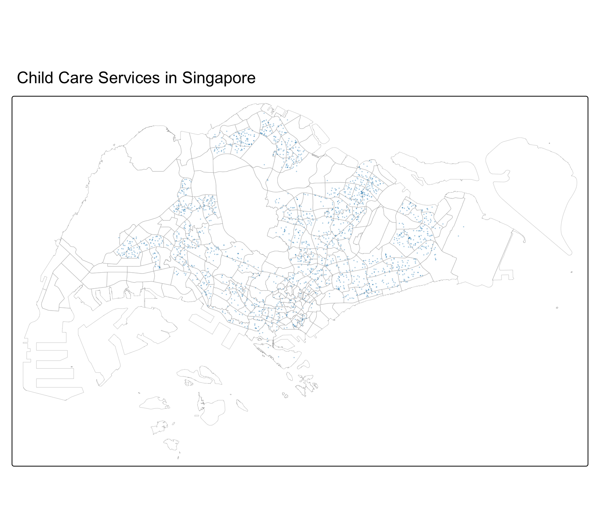
The points are not evenly spread across the island. They are mostly in residential planning areas, which is expected for this type of facility.
Convert sf Data to ppp
coords <- st_coordinates(childcare_sf)
childcare_ppp <- ppp(
x = coords[, "X"],
y = coords[, "Y"],
window = as.owin(st_bbox(mpsz_sf))
)
class(childcare_ppp)[1] "ppp"The course uses as.ppp(childcare_sf). In my current spatstat setup, I create the same ppp object explicitly from the point coordinates.
tibble(
total_points = npoints(childcare_ppp),
duplicated_xy = sum(duplicated(as.data.frame(coords))),
window_type = childcare_ppp$window$type
) %>%
kable()| total_points | duplicated_xy | window_type |
|---|---|---|
| 1925 | 187 | rectangle |
Some centres share the same coordinate. This can happen when several services are in the same building.
Create the Singapore Study Window
mpsz_cl <- st_union(st_geometry(mpsz_sf))
sg_owin <- as.owin(mpsz_cl)
class(sg_owin)[1] "owin"plot(sg_owin, main = "Singapore study window")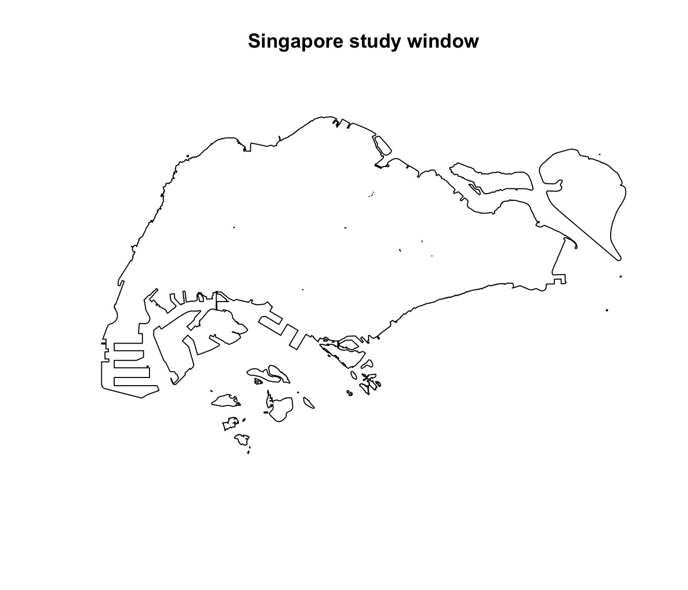
The owin object tells spatstat where the study area is. Without it, the point pattern would only know the rectangular bounding box.
Combine Points and Window
childcareSG_ppp <- unmark(childcare_ppp[sg_owin])
childcareSG_pppPlanar point pattern: 1925 points
window: polygonal boundary
enclosing rectangle: [2667.54, 56396.44] x [15748.72, 50256.33] unitswindow_summary <- tibble(
points = npoints(childcareSG_ppp),
window_type = Window(childcareSG_ppp)$type,
window_area_sqkm = spatstat.geom::area.owin(Window(childcareSG_ppp)) / 1000000,
average_intensity_per_sqkm = intensity(childcareSG_ppp) * 1000000
) %>%
mutate(across(where(is.numeric), ~ round(.x, 3)))
kable(window_summary)| points | window_type | window_area_sqkm | average_intensity_per_sqkm |
|---|---|---|---|
| 1925 | polygonal | 784.784 | 2.453 |
Now the point pattern is clipped to the Singapore boundary. This is the object used in the nearest neighbour and density analysis.
Clark-Evans Test
ce_global_z <- clarkevans.test(
childcareSG_ppp,
correction = "none",
clipregion = NULL,
alternative = "clustered"
)
ce_global_z
Clark-Evans test
No edge correction
Z-test
data: childcareSG_ppp
R = 0.49444, p-value < 2.2e-16
alternative hypothesis: clustered (R < 1)The Clark-Evans R value is below 1. This means the child care services are closer together than a random pattern.
ce_global_mc <- clarkevans.test(
childcareSG_ppp,
correction = "none",
clipregion = NULL,
alternative = "clustered",
method = "MonteCarlo",
nsim = 99
)
ce_global_mc
Clark-Evans test
No edge correction
Monte Carlo test based on 99 simulations of CSR with fixed n
data: childcareSG_ppp
R = 0.49444, p-value = 0.01
alternative hypothesis: clustered (R < 1)The Monte Carlo test gives the same broad conclusion. The observed pattern is more clustered than Complete Spatial Randomness.
Kernel Density Estimation
kde_SG_diggle <- density(
childcareSG_ppp,
sigma = bw.diggle,
edge = TRUE,
kernel = "gaussian"
)
plot(kde_SG_diggle, main = "KDE of child care services, bw.diggle")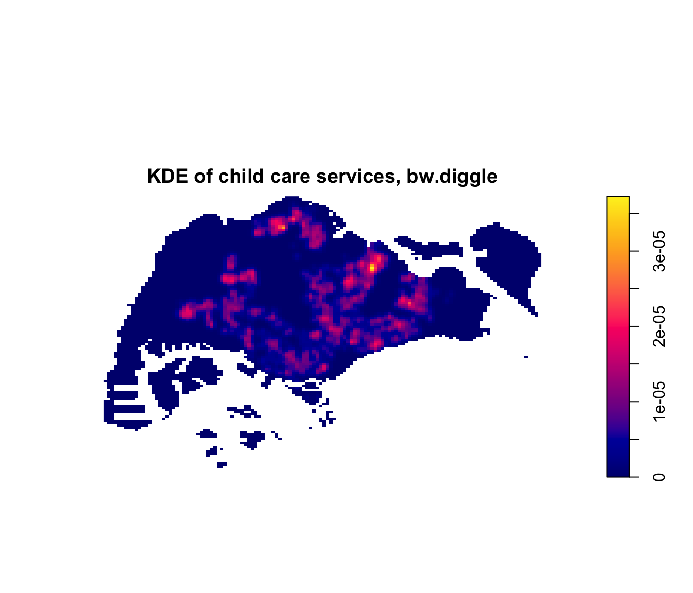
KDE turns point locations into a smooth surface. High values show places with stronger concentration of child care services.
bw <- bw.diggle(childcareSG_ppp)
bw sigma
295.4419 The bandwidth controls how smooth the density surface is. A larger bandwidth makes a smoother map.
Rescale KDE Values
childcareSG_ppp_km <- rescale.ppp(
childcareSG_ppp,
1000,
"km"
)kde_childcareSG_km <- density(
childcareSG_ppp_km,
sigma = bw.diggle,
edge = TRUE,
kernel = "gaussian"
)
plot(kde_childcareSG_km, main = "KDE after rescaling to kilometres")Rescaling makes the distance unit easier to read. The pattern is the same, but the bandwidth is now expressed in kilometres.
Compare Bandwidth Methods
bw_scott <- bw.scott(childcareSG_ppp_km)
bandwidth_table <- tibble(
method = c("bw.CvL", "bw.scott x", "bw.scott y", "bw.ppl", "bw.diggle"),
sigma_km = c(
as.numeric(bw.CvL(childcareSG_ppp_km)),
as.numeric(bw_scott["sigma.x"]),
as.numeric(bw_scott["sigma.y"]),
as.numeric(bw.ppl(childcareSG_ppp_km)),
as.numeric(bw.diggle(childcareSG_ppp_km))
)
) %>%
mutate(sigma_km = round(sigma_km, 3))
kable(bandwidth_table)| method | sigma_km |
|---|---|
| bw.CvL | 4.543 |
| bw.scott x | 2.160 |
| bw.scott y | 1.396 |
| bw.ppl | 0.390 |
| bw.diggle | 0.295 |
Different methods choose different bandwidths. I keep bw.diggle for most maps because it gives a clear local pattern without being too rough.
kde_childcareSG_ppl <- density(
childcareSG_ppp_km,
sigma = bw.ppl,
edge = TRUE,
kernel = "gaussian"
)
old_par <- par(mfrow = c(1, 2))
plot(kde_childcareSG_km, main = "bw.diggle")
plot(kde_childcareSG_ppl, main = "bw.ppl")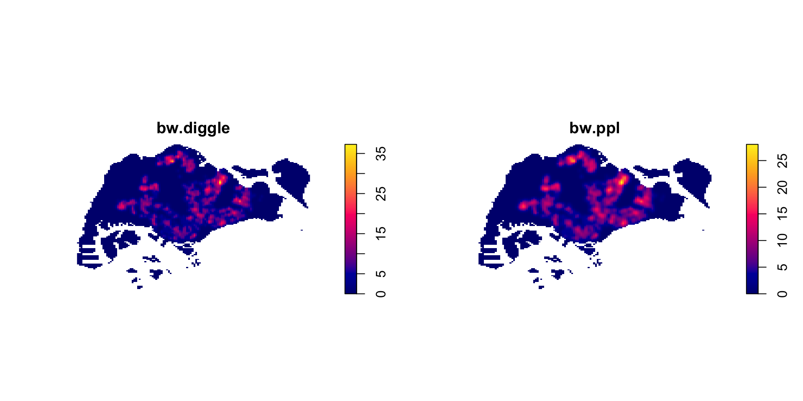
par(old_par)bw.ppl uses a larger bandwidth here, so the density surface is smoother. bw.diggle keeps more local detail.
Compare Kernel Methods
sigma_km <- as.numeric(bw.diggle(childcareSG_ppp_km))
old_par <- par(mfrow = c(2, 2))
plot(
density(childcareSG_ppp_km, sigma = sigma_km, edge = TRUE, kernel = "gaussian"),
main = "Gaussian"
)
plot(
density(childcareSG_ppp_km, sigma = sigma_km, edge = TRUE, kernel = "epanechnikov"),
main = "Epanechnikov"
)
plot(
density(childcareSG_ppp_km, sigma = sigma_km, edge = TRUE, kernel = "quartic"),
main = "Quartic"
)
plot(
density(childcareSG_ppp_km, sigma = sigma_km, edge = TRUE, kernel = "disc"),
main = "Disc"
)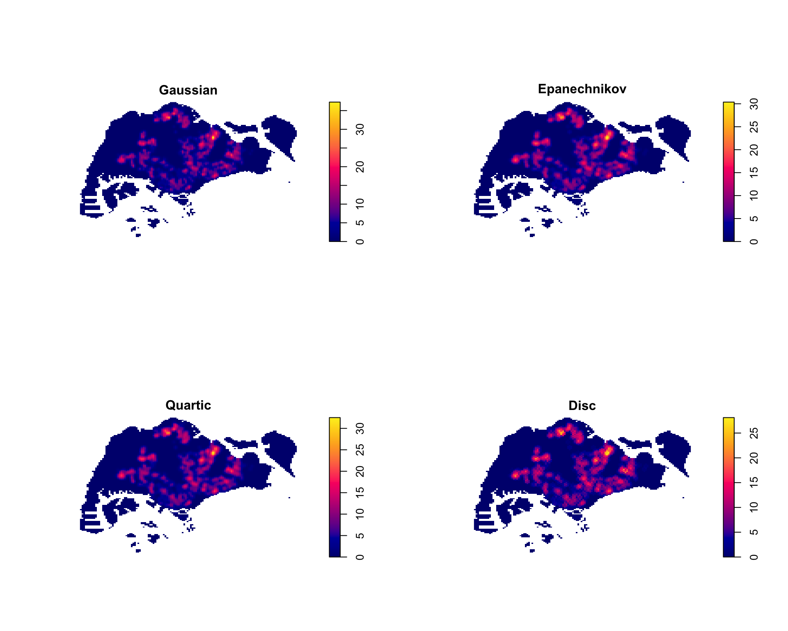
par(old_par)Changing the kernel changes the surface shape slightly. The main hotspot pattern remains similar.
Fixed and Adaptive KDE
kde_childcareSG_fb <- density(
childcareSG_ppp_km,
sigma = 0.6,
edge = TRUE,
kernel = "gaussian"
)
kde_childcareSG_ab <- adaptive.density(
childcareSG_ppp_km,
method = "kernel"
)
old_par <- par(mfrow = c(1, 2))
plot(kde_childcareSG_fb, main = "Fixed bandwidth, 0.6 km")
plot(kde_childcareSG_ab, main = "Adaptive bandwidth")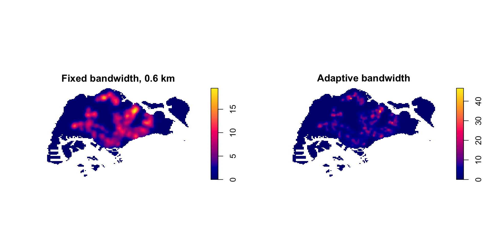
par(old_par)Fixed bandwidth uses one smoothing distance everywhere. Adaptive bandwidth changes the smoothing by local point density.
Cartographic KDE Map
kde_childcareSG_terra <- terra::rast(kde_SG_diggle)
crs(kde_childcareSG_terra) <- "EPSG:3414"
kde_childcareSG_terraclass : SpatRaster
size : 128, 128, 1 (nrow, ncol, nlyr)
resolution : 419.757, 269.5907 (x, y)
extent : 2667.538, 56396.44, 15748.72, 50256.33 (xmin, xmax, ymin, ymax)
coord. ref. : SVY21 / Singapore TM (EPSG:3414)
source(s) : memory
name : lyr.1
min value : -9.662620e-21
max value : 3.727443e-05
unit : unit I use the metre-based KDE here so the raster coordinates match EPSG:3414.
tm_shape(kde_childcareSG_terra) +
tm_raster(
col.scale = tm_scale_continuous(values = "viridis"),
col.legend = tm_legend(
title = "Density values",
title.size = 0.7,
text.size = 0.7,
bg.color = "white",
bg.alpha = 0.75,
position = tm_pos_in("right", "bottom"),
frame = TRUE
)
) +
tm_compass() +
tm_layout(scale = 1.0)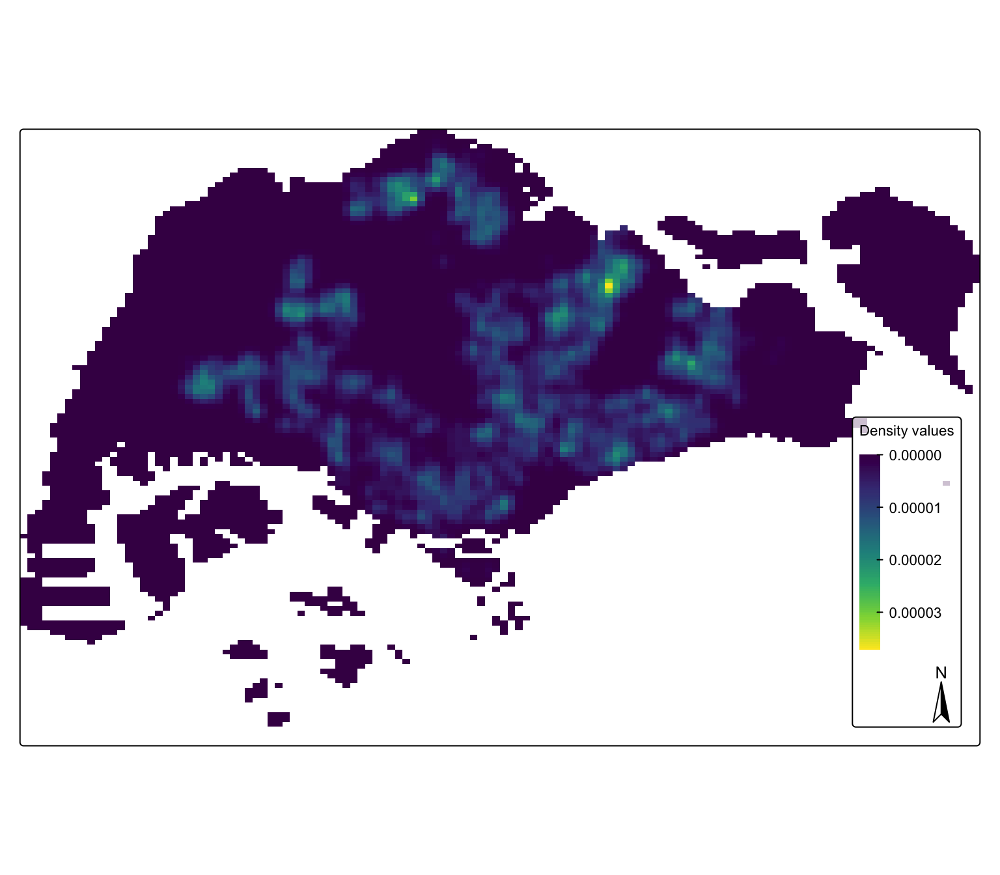
This is a cleaner map output. It shows the KDE result as a raster surface instead of a basic R plot.
First-order Analysis by Planning Area
make_area_window <- function(planning_area) {
mpsz_sf %>%
filter(PLN_AREA_N == planning_area) %>%
st_geometry() %>%
st_union() %>%
as.owin()
}
make_area_area <- function(planning_area) {
mpsz_sf %>%
filter(PLN_AREA_N == planning_area) %>%
st_geometry() %>%
st_union() %>%
st_area() %>%
as.numeric()
}
pg_owin <- make_area_window("PUNGGOL")
tm_owin <- make_area_window("TAMPINES")
ck_owin <- make_area_window("CHOA CHU KANG")
jw_owin <- make_area_window("JURONG WEST")
childcare_pg_ppp <- unmark(childcare_ppp[pg_owin])
childcare_tm_ppp <- unmark(childcare_ppp[tm_owin])
childcare_ck_ppp <- unmark(childcare_ppp[ck_owin])
childcare_jw_ppp <- unmark(childcare_ppp[jw_owin])planning_area_summary <- tibble(
planning_area = c("Punggol", "Tampines", "Choa Chu Kang", "Jurong West"),
childcare_points = c(
npoints(childcare_pg_ppp),
npoints(childcare_tm_ppp),
npoints(childcare_ck_ppp),
npoints(childcare_jw_ppp)
),
area_sqkm = c(
make_area_area("PUNGGOL"),
make_area_area("TAMPINES"),
make_area_area("CHOA CHU KANG"),
make_area_area("JURONG WEST")
) / 1000000
) %>%
mutate(
area_sqkm = round(area_sqkm, 2),
points_per_sqkm = round(childcare_points / area_sqkm, 2)
)
kable(planning_area_summary)| planning_area | childcare_points | area_sqkm | points_per_sqkm |
|---|---|---|---|
| Punggol | 72 | 9.37 | 7.68 |
| Tampines | 117 | 20.80 | 5.62 |
| Choa Chu Kang | 74 | 6.12 | 12.09 |
| Jurong West | 110 | 14.68 | 7.49 |
These four planning areas have enough points for local comparison. The point count alone is not enough, so I also calculate points per square kilometre.
childcare_pg_ppp_km <- rescale.ppp(childcare_pg_ppp, 1000, "km")
childcare_tm_ppp_km <- rescale.ppp(childcare_tm_ppp, 1000, "km")
childcare_ck_ppp_km <- rescale.ppp(childcare_ck_ppp, 1000, "km")
childcare_jw_ppp_km <- rescale.ppp(childcare_jw_ppp, 1000, "km")old_par <- par(mfrow = c(2, 2))
plot(childcare_pg_ppp_km, main = "Punggol")
plot(childcare_tm_ppp_km, main = "Tampines")
plot(childcare_ck_ppp_km, main = "Choa Chu Kang")
plot(childcare_jw_ppp_km, main = "Jurong West")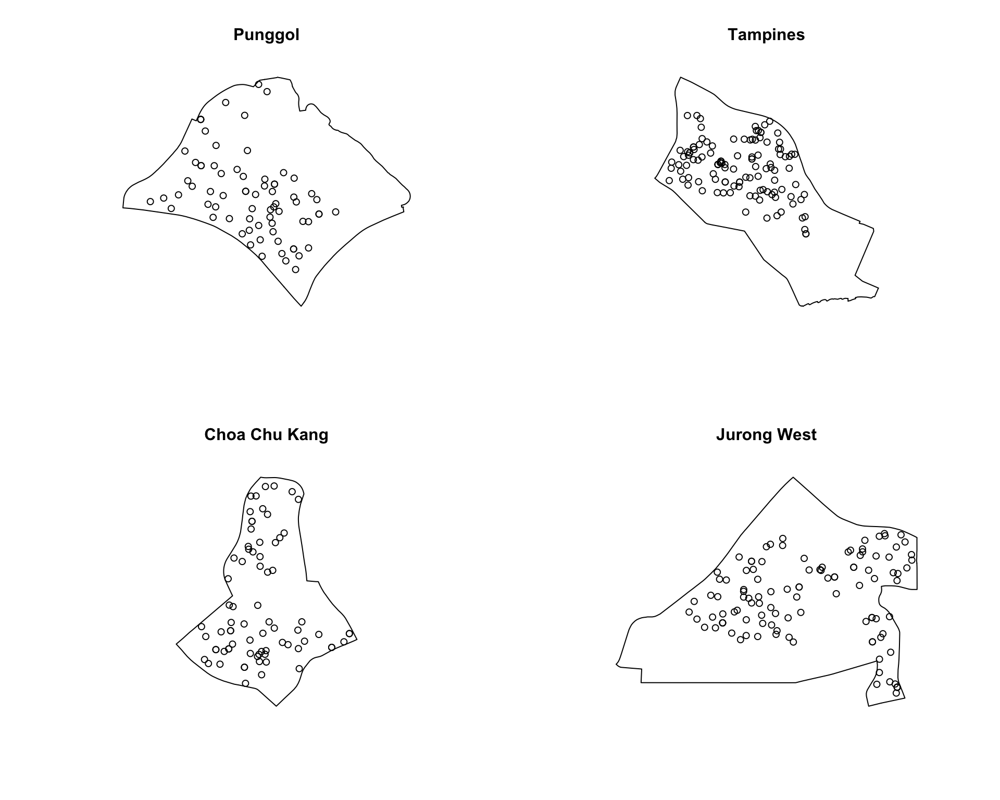
par(old_par)This local view makes the point pattern easier to inspect. The whole-island view hides many small differences.
Clark-Evans Test by Planning Area
ce_ck <- clarkevans.test(
childcare_ck_ppp,
correction = "none",
clipregion = NULL,
alternative = "two.sided"
)
ce_tm <- clarkevans.test(
childcare_tm_ppp,
correction = "none",
clipregion = NULL,
alternative = "two.sided"
)
ce_ck
Clark-Evans test
No edge correction
Z-test
data: childcare_ck_ppp
R = 0.84097, p-value = 0.008866
alternative hypothesis: two-sidedce_tm
Clark-Evans test
No edge correction
Z-test
data: childcare_tm_ppp
R = 0.66817, p-value = 6.58e-12
alternative hypothesis: two-sidedarea_ce_table <- tibble(
planning_area = c("Choa Chu Kang", "Tampines"),
R = c(unname(ce_ck$statistic), unname(ce_tm$statistic)),
p_value = format.pval(
c(ce_ck$p.value, ce_tm$p.value),
digits = 3,
eps = 0.001
)
) %>%
mutate(R = round(R, 3))
kable(area_ce_table)| planning_area | R | p_value |
|---|---|---|
| Choa Chu Kang | 0.841 | 0.00887 |
| Tampines | 0.668 | < 0.001 |
Both R values are below 1. This suggests clustering at the planning area level too.
KDE by Planning Area
old_par <- par(mfrow = c(2, 2))
plot(
density(childcare_pg_ppp_km, sigma = bw.diggle, edge = TRUE, kernel = "gaussian"),
main = "Punggol"
)
plot(
density(childcare_tm_ppp_km, sigma = bw.diggle, edge = TRUE, kernel = "gaussian"),
main = "Tampines"
)
plot(
density(childcare_ck_ppp_km, sigma = bw.diggle, edge = TRUE, kernel = "gaussian"),
main = "Choa Chu Kang"
)
plot(
density(childcare_jw_ppp_km, sigma = bw.diggle, edge = TRUE, kernel = "gaussian"),
main = "Jurong West"
)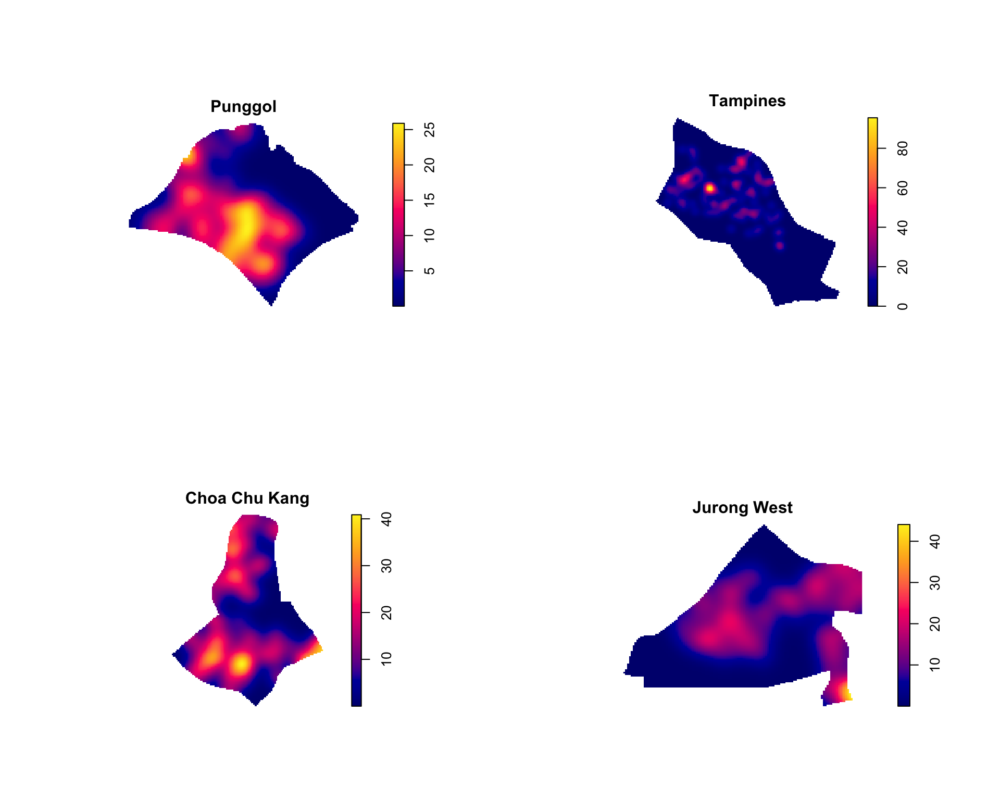
par(old_par)The KDE maps show local high-density areas. This is more useful than only saying whether the whole pattern is clustered.
Part 2: Second-order Spatial Point Patterns Analysis
Second-order analysis looks at distance relationships between points. Here I use Choa Chu Kang and Tampines because they have enough child care points and the course also uses them.
Note
The course uses 999 simulations for some CSR tests. I use simulation_n <- 99 so the page can render faster. The code structure is the same, and a larger number can be used for a final statistical run.
simulation_n <- 99
gf_rmax <- 500
kl_rmax <- 1000G-function
The G-function looks at nearest neighbour distance from each observed point. If the observed curve rises faster than the CSR curve, nearby points are common.
G_CK <- Gest(childcare_ck_ppp, correction = "border", rmax = gf_rmax)
G_tm <- Gest(childcare_tm_ppp, correction = "best", rmax = gf_rmax)
old_par <- par(mfrow = c(1, 2))
plot(G_CK, xlim = c(0, gf_rmax), main = "G-function: Choa Chu Kang")
plot(G_tm, xlim = c(0, gf_rmax), main = "G-function: Tampines")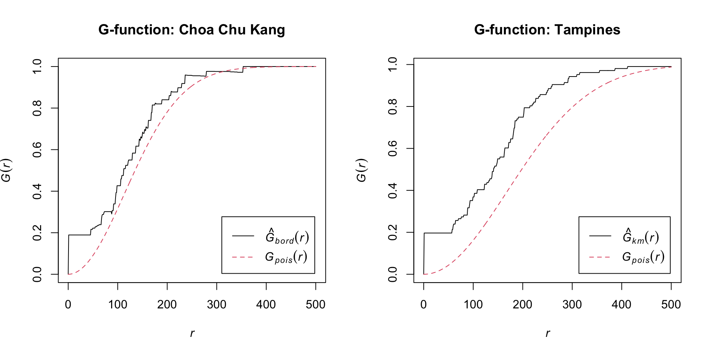
par(old_par)The two plots show how quickly each child care centre finds another nearby centre.
G_CK_csr <- envelope(
childcare_ck_ppp,
Gest,
nsim = simulation_n,
rmax = gf_rmax,
verbose = FALSE
)
G_tm_csr <- envelope(
childcare_tm_ppp,
Gest,
correction = "all",
nsim = simulation_n,
rmax = gf_rmax,
verbose = FALSE
)
old_par <- par(mfrow = c(1, 2))
plot(G_CK_csr, main = "CSR envelope: Choa Chu Kang")
plot(G_tm_csr, main = "CSR envelope: Tampines")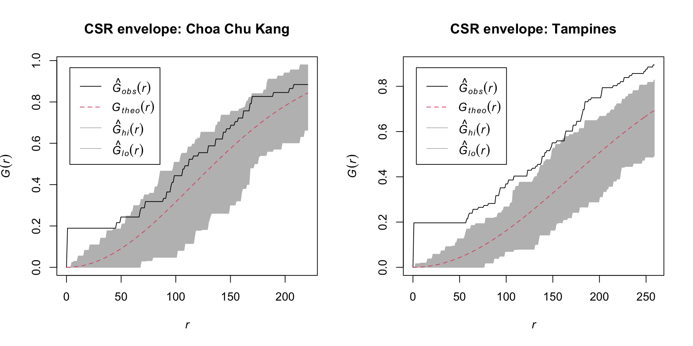
par(old_par)The envelope is the random benchmark. When the observed line moves outside the envelope, the pattern is not behaving like CSR at that distance.
F-function
The F-function uses random empty locations and measures the distance to the nearest child care point. It helps describe empty space.
F_CK <- Fest(childcare_ck_ppp, rmax = gf_rmax)
F_tm <- Fest(childcare_tm_ppp, correction = "best", rmax = gf_rmax)
old_par <- par(mfrow = c(1, 2))
plot(F_CK, main = "F-function: Choa Chu Kang")
plot(F_tm, main = "F-function: Tampines")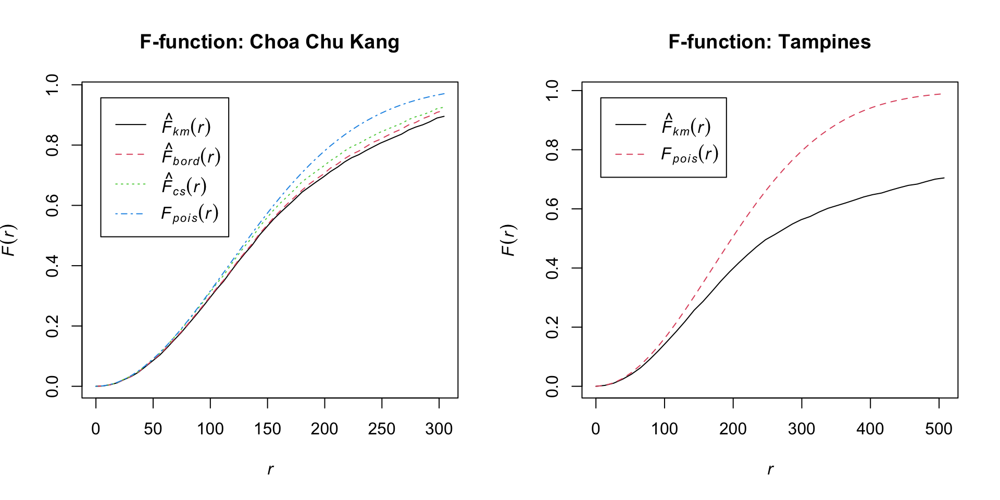
par(old_par)If the F curve rises quickly, most places are close to a child care service. This is about coverage from the empty-space side.
F_CK_csr <- envelope(
childcare_ck_ppp,
Fest,
nsim = simulation_n,
rmax = gf_rmax,
verbose = FALSE
)
F_tm_csr <- envelope(
childcare_tm_ppp,
Fest,
correction = "all",
nsim = simulation_n,
rmax = gf_rmax,
verbose = FALSE
)
old_par <- par(mfrow = c(1, 2))
plot(F_CK_csr, main = "CSR envelope: Choa Chu Kang")
plot(F_tm_csr, main = "CSR envelope: Tampines")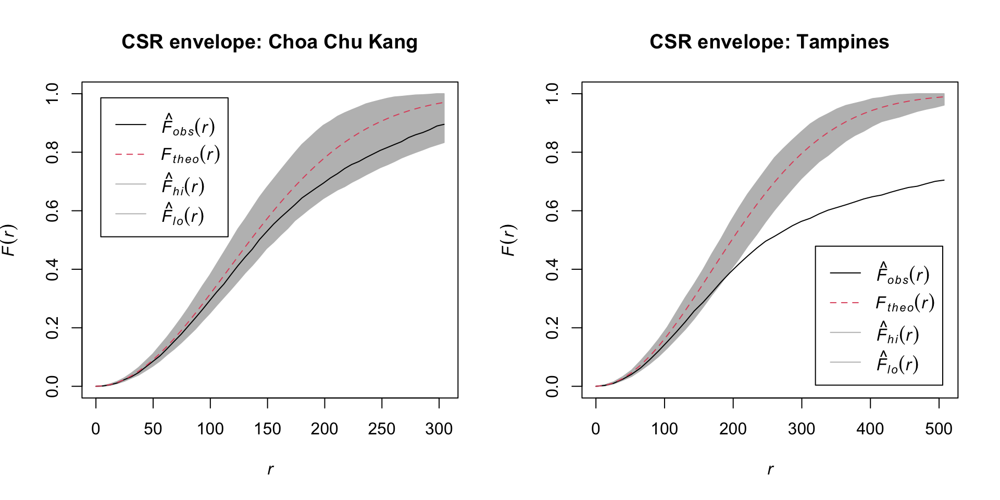
par(old_par)This adds a random reference to the empty-space analysis. It is useful because a visual curve alone can be hard to judge.
K-function
The K-function counts neighbours within increasing distance bands. It is useful for checking clustering across many distances.
K_ck <- Kest(childcare_ck_ppp, correction = "Ripley", rmax = kl_rmax)
K_tm <- Kest(childcare_tm_ppp, correction = "Ripley", rmax = kl_rmax)
old_par <- par(mfrow = c(1, 2))
plot(K_ck, . - r ~ r, ylab = "K(d)-r", xlab = "d(m)", main = "K-function: Choa Chu Kang")
plot(K_tm, . - r ~ r, ylab = "K(d)-r", xlab = "d(m)", main = "K-function: Tampines")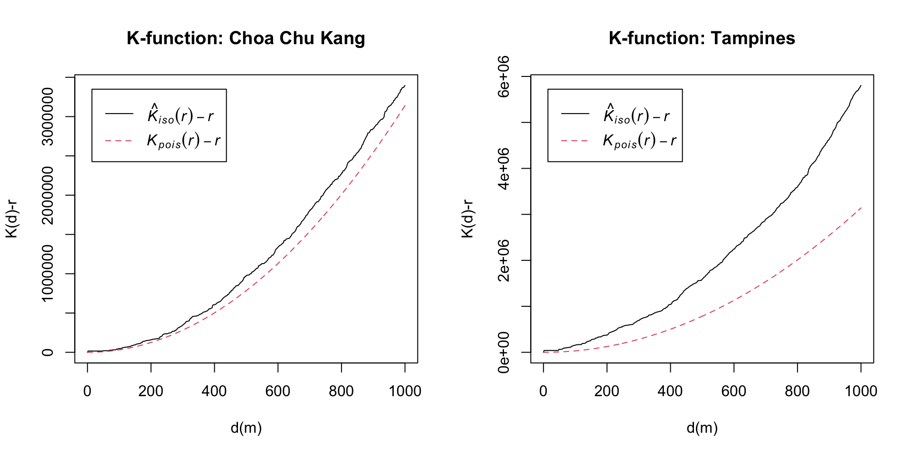
par(old_par)The transformed plot makes it easier to compare the observed pattern with the CSR reference line.
K_ck_csr <- envelope(
childcare_ck_ppp,
Kest,
nsim = simulation_n,
rank = 1,
global = TRUE,
rmax = kl_rmax,
verbose = FALSE
)
K_tm_csr <- envelope(
childcare_tm_ppp,
Kest,
nsim = simulation_n,
rank = 1,
global = TRUE,
rmax = kl_rmax,
verbose = FALSE
)
old_par <- par(mfrow = c(1, 2))
plot(K_ck_csr, . - theo ~ r, main = "K CSR: Choa Chu Kang")
plot(K_tm_csr, . - theo ~ r, main = "K CSR: Tampines")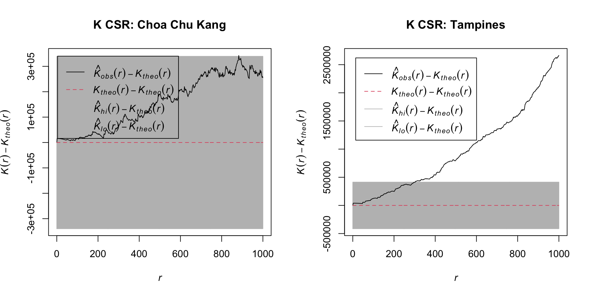
par(old_par)For K-function envelopes, a line above the random envelope suggests clustering at that distance range.
L-function
The L-function is a transformed version of K. It is often easier to read because CSR is shown around zero after subtracting distance.
L_ck <- Lest(childcare_ck_ppp, correction = "Ripley", rmax = kl_rmax)
L_tm <- Lest(childcare_tm_ppp, correction = "Ripley", rmax = kl_rmax)
old_par <- par(mfrow = c(1, 2))
plot(L_ck, . - r ~ r, ylab = "L(d)-r", xlab = "d(m)", main = "L-function: Choa Chu Kang")
plot(L_tm, . - r ~ r, ylab = "L(d)-r", xlab = "d(m)", main = "L-function: Tampines")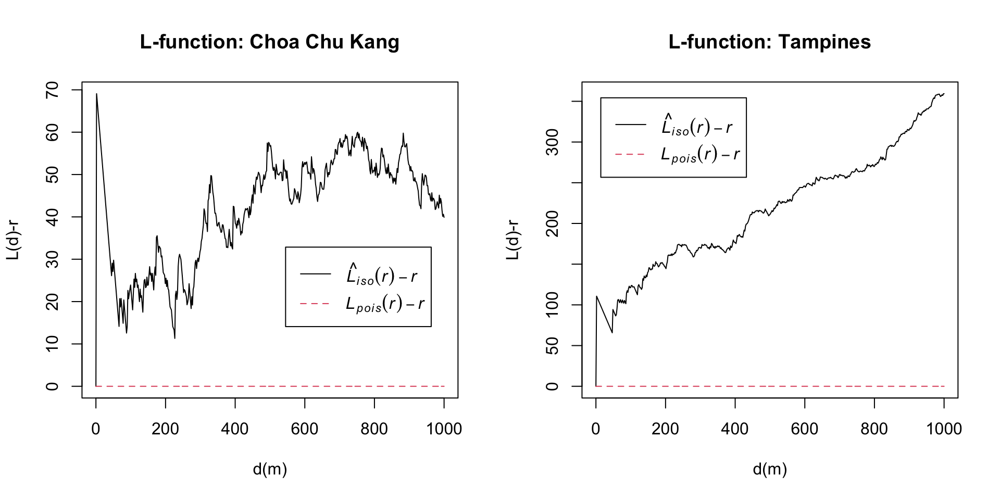
par(old_par)L-function is easier to explain visually. Values above zero usually indicate clustering.
L_ck_csr <- envelope(
childcare_ck_ppp,
Lest,
nsim = simulation_n,
rank = 1,
global = TRUE,
rmax = kl_rmax,
verbose = FALSE
)
L_tm_csr <- envelope(
childcare_tm_ppp,
Lest,
nsim = simulation_n,
rank = 1,
global = TRUE,
rmax = kl_rmax,
verbose = FALSE
)
old_par <- par(mfrow = c(1, 2))
plot(L_ck_csr, . - theo ~ r, main = "L CSR: Choa Chu Kang")
plot(L_tm_csr, . - theo ~ r, main = "L CSR: Tampines")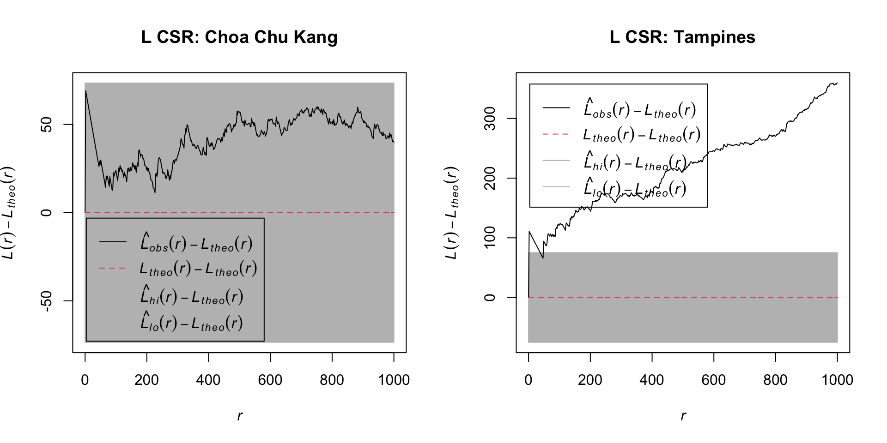
par(old_par)The CSR envelopes help confirm that the pattern is not only a visual impression. The services show clustering at short distances, especially in denser residential parts.
Final Reflection
This hands-on exercise shows two ways to study point patterns. First-order methods show where the intensity is high. Second-order methods check how points relate to other points across distance. For child care services, clustering is expected because centres follow housing estates and population demand. The main limitation is that CSR is a simple benchmark, so the result should be read as an exploratory test rather than a full explanation of why centres are located there.